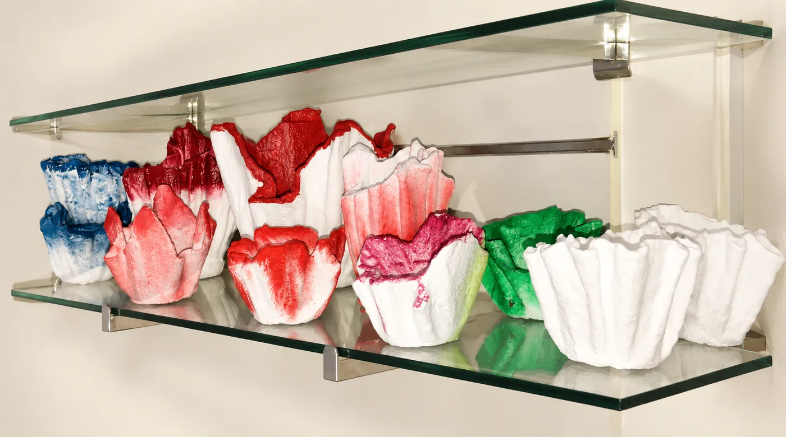

Para casa
Una forma sencilla de dar vida a un rincón.
Una planta puede cambiar el ambiente de un rincón. Descubre esta categoría y pregunta qué opciones de macetas hay disponibles para regalar o para ti.
 Imagen ilustrativa
Imagen ilustrativaLas macetas pueden ser un detalle para una casa nueva, un escritorio o un espacio al que le falta vida. Si tienes un lugar o una idea en mente, cuéntanosla y consulta las opciones actuales de la floristería.
Una forma sencilla de dar vida a un rincón.
Un detalle que permanece más allá de la ocasión.
Tamaños, plantas y recipientes varían según disponibilidad.

La maceta abre la puerta a cultivar incluso donde no hay suelo, pero obliga a entender mejor el agua y las raíces.
Cultivar en recipientes permite mover las plantas, protegerlas del tiempo y llevar verde a patios, balcones e interiores. La maceta no es solo un objeto decorativo: determina cuánto espacio tienen las raíces, cuánta humedad retiene el sustrato y si el agua sobrante puede salir.
Explica dónde vivirá: orientación, horas de luz, interior o exterior y si recibe sol directo.
Toca el sustrato antes de añadir agua. No sigas un calendario fijo: el consumo cambia con tamaño, estación y especie.
Deja salir el exceso de agua y vacía el cubremacetas. Las raíces no deben permanecer sumergidas.
Si las raíces llenan el recipiente o salen por los agujeros, consulta si conviene pasarla a una maceta ligeramente mayor.
Retira hojas secas, observa el envés por si hay plagas y gira la planta ocasionalmente para un crecimiento equilibrado.
No hay una receta de tierra y riego válida para todas las plantas. Identifica la especie y adapta el recipiente al lugar donde vivirá.
Escoge sustrato sin turba adaptado a la especie. Una planta tropical, una aromática y un cactus no necesitan la misma retención de humedad.
La maceta interior necesita agujeros. Si usas un cubremacetas bonito, saca la planta para regarla y vacía el agua sobrante antes de volver a colocarla.
Introduce un dedo en la parte superior del sustrato y comprueba la humedad antes de regar. Cuando toque, riega hasta que salga agua por abajo y deja escurrir.
No siempre. Un recipiente demasiado grande puede retener humedad alrededor de raíces pequeñas. Trasplanta cuando la planta lo necesite, a un tamaño proporcionado.
Las plantas en recipiente agotan nutrientes antes que las del suelo. Pregunta por el fertilizante apropiado y sigue la dosis en época de crecimiento.
Puede haber varias causas, incluido exceso de riego, poca luz o cambio de ambiente. Comprueba primero sustrato, drenaje y ubicación antes de añadir agua.
La flor o planta cambia un espacio cuando su tamaño, luz y función se tienen en cuenta.
Una planta de porte vertical puede marcar el acceso sin bloquear el paso.
Las especies colgantes suavizan líneas rectas; confirma que reciban luz suficiente.
Agrupa macetas de distinta altura, pero elige plantas aptas para exterior.
Una pieza compacta aporta verde sin invadir la zona de trabajo.
Escríbenos con tu idea para consultar disponibilidad y detalles. Las fotografías son de inspiración y no representan productos disponibles en tienda.